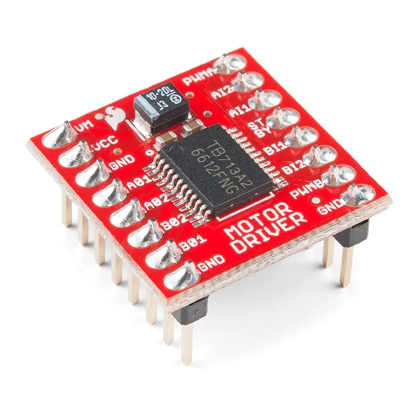

TB6612FNG Dual DC Motor Driver Module
The TB6612FNG Dual DC Motor Driver Module is an exceptionally efficient and highly compact motor control solution designed to drive two DC motors or one bipolar stepper motor. Operating as a superior alternative to the aging L298N motor driver, the TB6612FNG utilizes modern MOSFET-based H-bridge technology. This technological upgrade provides a significant reduction in voltage drop across the motor driver IC, meaning that your motors receive more of the battery's actual voltage, leading to higher torque and better overall performance. For robotics enthusiasts and electronics engineers in Bangladesh, this module offers a perfect blend of power, efficiency, and space-saving design, making it ideal for everything from miniature sumo robots to sophisticated autonomous rovers.
One of the most compelling advantages of the TB6612FNG over older bipolar transistor-based drivers is its exceptional thermal efficiency. Because the internal MOSFETs have a very low ON-resistance, they dissipate far less heat during operation. This eliminates the need for the bulky, heavy aluminum heatsinks that are typically required by the L298N. As a result, the TB6612FNG module is incredibly small and lightweight, allowing it to be easily integrated into space-constrained projects, drones, and micro-robots where every gram and millimeter counts. Despite its small size, it packs a serious punch, capable of delivering a continuous output current of 1.2A per channel, with peak burst currents reaching up to 3.2A for short durations.
Controlling the TB6612FNG is straightforward and intuitive. It interfaces easily with standard microcontrollers such as the Arduino Uno, Mega, ESP32, and Raspberry Pi. Each motor channel is controlled via three pins: two directional pins (IN1 and IN2) to determine forward, reverse, or braking states, and one PWM (Pulse Width Modulation) pin to control the motor's speed. The module also features a convenient Standby (STBY) pin. Pulling the standby pin LOW disables the motors entirely, placing the driver into a low-power sleep mode—a highly useful feature for battery-operated robots that need to conserve power while remaining idle. The logic supply voltage ranges from 2.7V to 5.5V, ensuring seamless compatibility with both 3.3V and 5V logic systems.
When building battery-powered electronics, efficiency is paramount. The TB6612FNG module requires a dedicated motor power supply (VMOT) capable of handling up to 15V. It integrates built-in thermal shutdown and under-voltage lockout protection circuits, ensuring that the driver IC remains safe even under demanding conditions. Whether you are participating in a local robotics competition, building a custom RC car, or designing an automated tracking system, the TB6612FNG Dual DC Motor Driver from ElectroMart BD provides the precise control and robust reliability necessary to bring your motorized creations to life.
Key Features:
- High efficiency MOSFET H-bridge design
- Controls two DC motors or one stepper motor
- Ultra-compact and lightweight, no heatsink required
- Standby control to save battery life
- Built-in thermal shutdown and under-voltage protection
Technical Specifications:
Common Project Applications:
- Miniature and Micro Robotics: Perfect for line followers, maze solvers, and mini sumo bots due to its tiny footprint.
- Battery-Operated Vehicles: High efficiency means longer battery life for RC cars and autonomous rovers.
- Stepper Motor Control: Capable of driving a single bipolar stepper motor for CNC machines or 3D printer mechanisms.
- Camera Pan and Tilt Systems: Smooth PWM control allows for precise movement of camera gimbals.
- Automated Smart Curtains and Blinds: Driving small DC motors quietly in home automation projects.
- Water Pumps and Fans: Controlling the speed of small DC pumps and cooling fans in automated systems.
- Robotic Arms and Grippers: Driving the precise actuation motors in robotic manipulation setups.
- Education and STEM Projects: An excellent upgrade from the L298N for teaching modern motor control techniques.
Why Buy from ElectroMart BD?
- 100% Quality Tested TB6612FNG Dual DC Motor Driver Module
- Best price guarantee in Bangladesh (৳220)
- Fast and reliable delivery across all 64 districts
- Dedicated technical & project guidance via WhatsApp